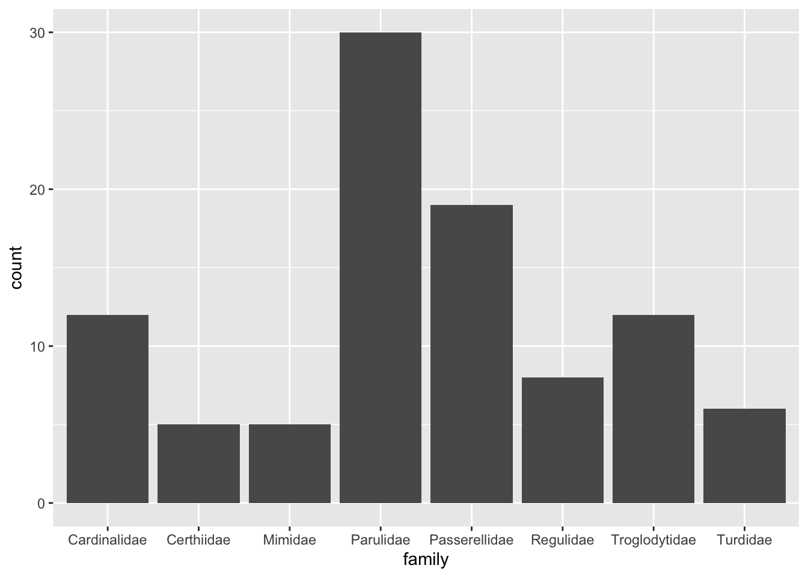
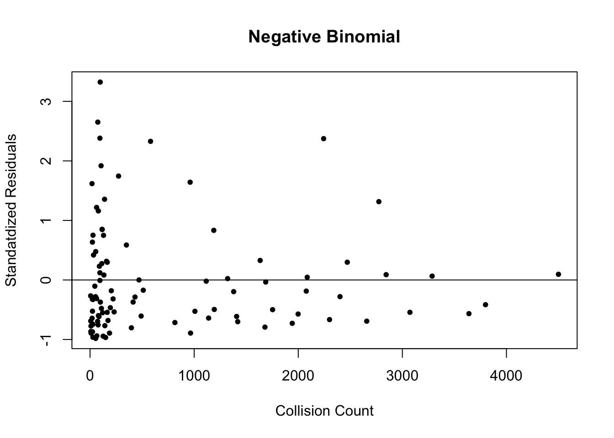

install.packages(
c("AER", "caret", "DescTools", "hydroTSM", "MASS", "nnet", "tidyverse")
)
library(AER)
library(caret)
library(DescTools)
library(hydroTSM)
library(MASS)
library(nnet)
library(tidyverse)AMS380 Project
Environment Setup
Loading Packages
Setting Seed
set.seed(123)Loading and Preparing Data
bird_collisions <- read.csv("data/bird_collisions.csv") %>%
select(-c("genus", "species")) %>%
subset(
!family %in% c(
"Icteridae",
"Icteriidae",
"Laniidae",
"Polioptilidae",
"Sittidae",
"Tyrannidae",
"Vireonidae"
)
)
bird_collisions$date <- time2season(
as.Date(bird_collisions$date),
out.fmt = "seasons"
)Multinomial Logistic Regression
Partitioning Data
train_idx <- bird_collisions$family %>%
createDataPartition(p = 0.70, list = FALSE)
train <- bird_collisions[train_idx, ]
test <- bird_collisions[-train_idx, ]Fitting the Model
model_multinom <- multinom(family ~ ., data = train)# weights: 80 (63 variable)
initial value 99946.278259
iter 10 value 39916.138546
iter 20 value 37466.216928
iter 30 value 35161.092185
iter 40 value 33906.061313
iter 50 value 32892.251244
iter 60 value 32343.965962
iter 70 value 32327.243743
iter 80 value 32327.087870
final value 32327.087346
convergedsummary(model_multinom)Warning in sqrt(diag(vc)): NaNs producedCall:
multinom(formula = family ~ ., data = train)
Coefficients:
(Intercept) datespring datesummer localityMP flight_callRare
Certhiidae -5.440391 -2.451669 -3.2546251 -1.9785231 33.185038
Mimidae 40.420202 -3.946748 -24.5113860 -2.0527913 -31.448451
Parulidae -33.442586 -2.473044 1.4222995 -0.3154199 -12.072629
Passerellidae 20.871627 -2.689929 -3.7522503 0.1371472 33.691597
Regulidae 17.273179 -2.662255 -57.2931369 -1.7452391 1.266164
Troglodytidae 38.290304 -3.425901 -26.5548093 -2.4499166 -35.564755
Turdidae 7.176912 -2.815401 0.4493394 0.4683667 9.228453
flight_callYes habitatForest habitatOpen stratumUpper
Certhiidae -13.273758 21.4495133 22.37629293 0.56286295
Mimidae -33.313088 -7.1525826 -1.64766233 -23.34854578
Parulidae 57.122812 0.7967781 2.04811010 -20.69587858
Passerellidae 5.167046 -1.0816490 0.75430504 -58.21299511
Regulidae -33.856783 18.8950504 20.80796875 0.05462575
Troglodytidae -47.412294 15.5759381 16.01250516 -36.80396661
Turdidae -2.894663 20.3219250 -0.04841721 -39.64763372
Std. Errors:
(Intercept) datespring datesummer localityMP flight_callRare
Certhiidae 0.02358855 0.10720823 1.085811e+00 0.11150382 6.550706e-14
Mimidae 0.13020604 0.15119191 NaN 0.12725651 6.959801e-15
Parulidae 0.02331108 0.08857677 4.180006e-01 0.07995550 3.312234e-16
Passerellidae 0.02777216 0.09422507 5.405298e-01 0.08660417 5.612788e-14
Regulidae 0.02501964 0.13343105 4.728346e-25 0.13973754 5.904209e-18
Troglodytidae 0.13020622 0.15119193 8.080737e-19 0.12725652 1.695847e-24
Turdidae 0.02214572 0.09778276 4.299172e-01 0.08934701 4.348584e-18
flight_callYes habitatForest habitatOpen stratumUpper
Certhiidae 2.358855e-02 2.358855e-02 1.818779e-10 2.358855e-02
Mimidae 2.802446e-07 6.813232e-09 2.495830e-07 8.705863e-08
Parulidae 2.331108e-02 8.016434e-02 2.396488e-02 4.917845e-02
Passerellidae 2.777224e-02 8.970295e-02 2.396488e-02 1.211751e-14
Regulidae 2.501970e-02 2.501970e-02 1.513844e-07 2.501970e-02
Troglodytidae 2.612011e-07 3.272814e-07 3.500352e-07 8.353010e-09
Turdidae 2.214572e-02 2.214572e-02 3.482190e-09 2.762525e-07
Residual Deviance: 64654.17
AIC: 64780.17 Evaluating the Model
pred_classes <- model_multinom %>% predict(test)
mean(pred_classes == test$family)[1] 0.6808469Generating Count Data
Generating Data
counts <- bird_collisions %>%
count(date, locality, family, flight_call, habitat, stratum, sort = TRUE)Preparing Count Data
# counts$date <- as.factor(counts$date)
# counts$locality <- as.factor(counts$locality)
# counts$family <- as.factor(counts$family)
# counts$flight_call <- as.factor(counts$flight_call)
# counts$habitat <- as.factor(counts$habitat)
# counts$stratum <- as.factor(counts$stratum)
# counts$n <- as.numeric(counts$n)Visualizing Count Data
ggplot(counts, aes(family, n)) + geom_point(aes(colour = family))ggplot(counts, aes(x = family)) + geom_bar()
ggplot(counts, aes(n, fill = habitat)) +
geom_histogram() +
scale_x_log10() +
facet_grid(habitat ~ ., margins = TRUE, scales = "free_y")`stat_bin()` using `bins = 30`. Pick better value with `binwidth`.Poisson Regression
Fitting the Model
model_pois <- glm(n ~ ., data = counts, family = poisson)
summary(model_pois)
Call:
glm(formula = n ~ ., family = poisson, data = counts)
Deviance Residuals:
Min 1Q Median 3Q Max
-39.465 -12.892 -3.061 6.597 75.379
Coefficients:
Estimate Std. Error z value Pr(>|z|)
(Intercept) 4.017873 0.066535 60.388 < 2e-16 ***
datespring -0.513625 0.007978 -64.379 < 2e-16 ***
datesummer -2.915845 0.025735 -113.301 < 2e-16 ***
localityMP 0.090142 0.007641 11.797 < 2e-16 ***
familyCerthiidae 1.472064 0.034483 42.690 < 2e-16 ***
familyMimidae 1.397765 0.075555 18.500 < 2e-16 ***
familyParulidae 2.095789 0.029865 70.175 < 2e-16 ***
familyPasserellidae 3.420419 0.032091 106.585 < 2e-16 ***
familyRegulidae 0.532377 0.042279 12.592 < 2e-16 ***
familyTroglodytidae 0.496879 0.075818 6.554 5.62e-11 ***
familyTurdidae 2.850906 0.033904 84.089 < 2e-16 ***
flight_callRare -4.239760 0.124999 -33.918 < 2e-16 ***
flight_callYes 0.905657 0.058100 15.588 < 2e-16 ***
habitatForest -0.015217 0.009125 -1.668 0.0954 .
habitatOpen -0.918810 0.013517 -67.977 < 2e-16 ***
stratumUpper 0.287464 0.014514 19.807 < 2e-16 ***
---
Signif. codes: 0 '***' 0.001 '**' 0.01 '*' 0.05 '.' 0.1 ' ' 1
(Dispersion parameter for poisson family taken to be 1)
Null deviance: 139895 on 96 degrees of freedom
Residual deviance: 29268 on 81 degrees of freedom
AIC: 29961
Number of Fisher Scoring iterations: 5Dispersion Test
dispersiontest(model_pois)
Overdispersion test
data: model_pois
z = 3.5356, p-value = 0.0002034
alternative hypothesis: true dispersion is greater than 1
sample estimates:
dispersion
329.8328 The p-value resulting from running an overdispersion test on the Poisson model is less than the significance level (0.05), so we reject the null hypothesis. Therefore, the true dispersion of the count data is greater than 1. As the count data is overdispersed, Quasi-Poisson regression or Negative Binomial regression would yield a more effective model.
mean(counts$n)[1] 707.7938var(counts$n)[1] 1665413The variance of the count data is significantly greater than the mean, therefore a Negative Binomial model would work best given the count data.
Negative Binomial Regression
Fitting the Model
model_neg_binom <- glm.nb(n ~ ., data = counts)Warning: glm.fit: algorithm did not convergesummary(model_neg_binom)
Call:
glm.nb(formula = n ~ ., data = counts, init.theta = 1.284469187,
link = log)
Deviance Residuals:
Min 1Q Median 3Q Max
-2.5651 -0.9721 -0.3952 0.3089 2.1758
Coefficients:
Estimate Std. Error z value Pr(>|z|)
(Intercept) 3.5532 0.7862 4.520 6.20e-06 ***
datespring -0.2121 0.2034 -1.043 0.29715
datesummer -3.0918 0.2564 -12.057 < 2e-16 ***
localityMP -0.1693 0.1814 -0.933 0.35072
familyCerthiidae 1.0929 0.4915 2.224 0.02618 *
familyMimidae 1.7643 0.8694 2.029 0.04242 *
familyParulidae 2.6811 0.3663 7.320 2.49e-13 ***
familyPasserellidae 3.6941 0.4805 7.688 1.49e-14 ***
familyRegulidae 0.3398 0.5322 0.639 0.52314
familyTroglodytidae 0.7948 0.8015 0.992 0.32133
familyTurdidae 3.0947 0.5765 5.368 7.95e-08 ***
flight_callRare -3.9364 0.8203 -4.799 1.60e-06 ***
flight_callYes 0.8501 0.6269 1.356 0.17509
habitatForest 0.3143 0.2435 1.291 0.19676
habitatOpen -0.8476 0.3037 -2.791 0.00526 **
stratumUpper 0.5542 0.3430 1.616 0.10612
---
Signif. codes: 0 '***' 0.001 '**' 0.01 '*' 0.05 '.' 0.1 ' ' 1
(Dispersion parameter for Negative Binomial(1.2845) family taken to be 1)
Null deviance: 388.81 on 96 degrees of freedom
Residual deviance: 108.41 on 81 degrees of freedom
AIC: 1279.2
Number of Fisher Scoring iterations: 1
Theta: 1.284
Std. Err.: 0.174
2 x log-likelihood: -1245.174 Plotting Residuals
plot(
model_neg_binom$fitted.values,
model_neg_binom$residuals,
pch = 20,
xlab = "Collision Count",
ylab = "Standatdized Residuals",
main = "Negative Binomial"
)
abline(0, 0)
Evaluating Negative Binomial Model
PseudoR2(model_neg_binom) McFadden
0.1054403